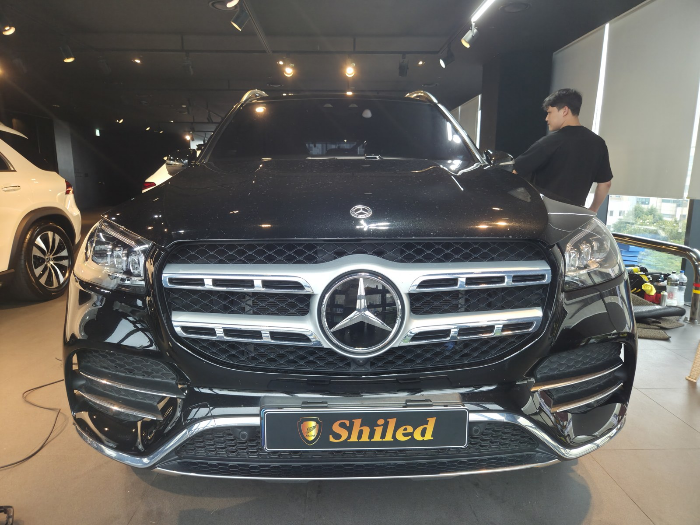
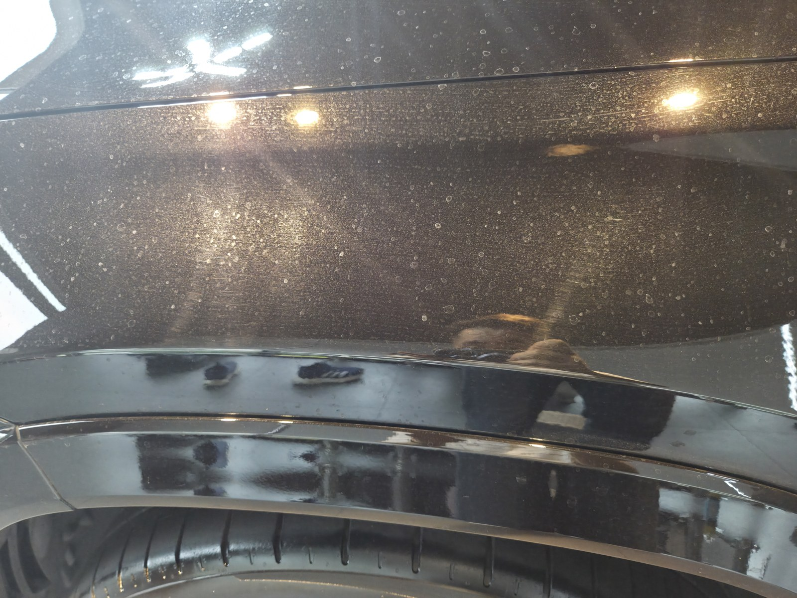
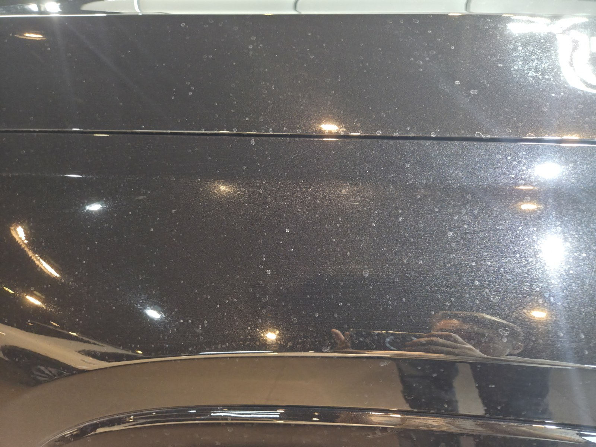
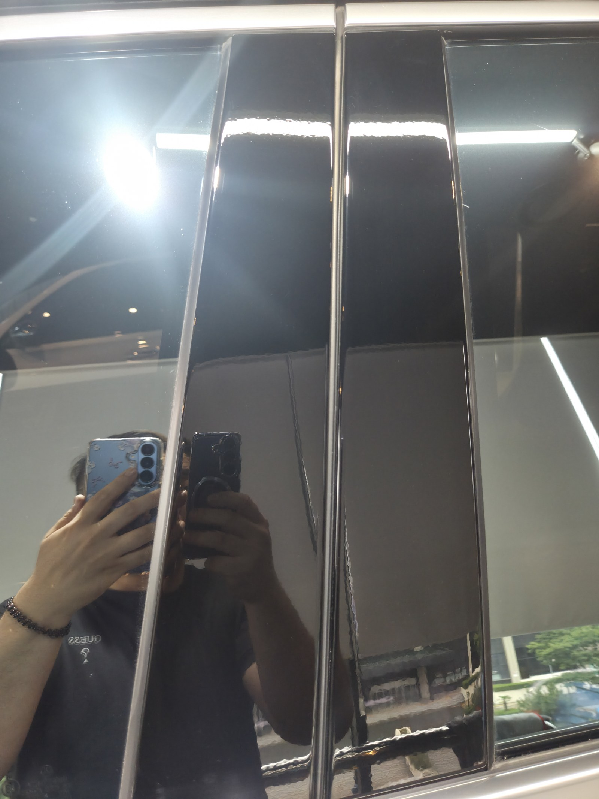
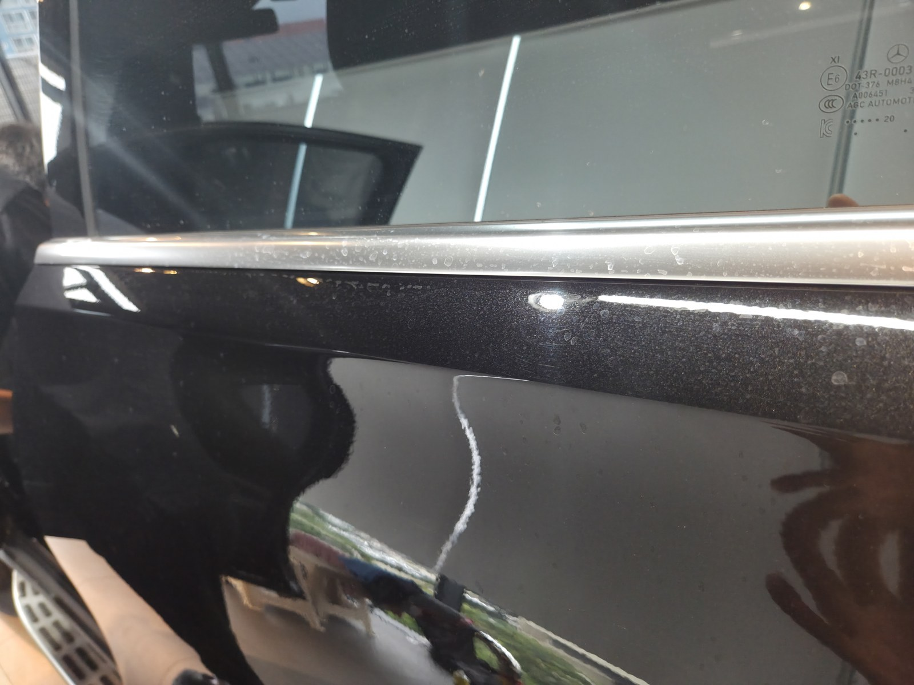
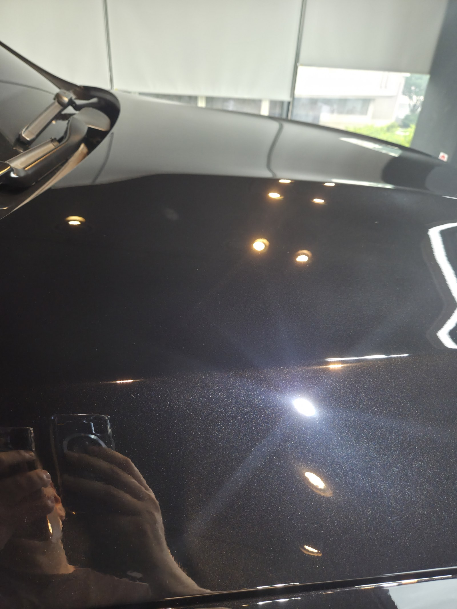
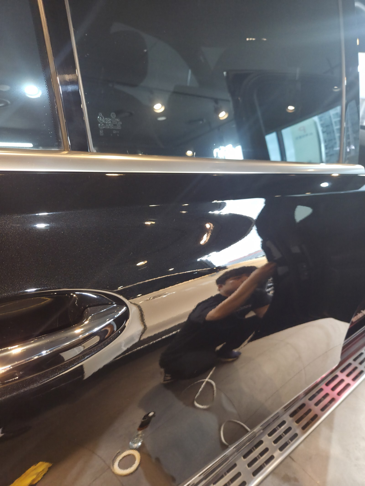
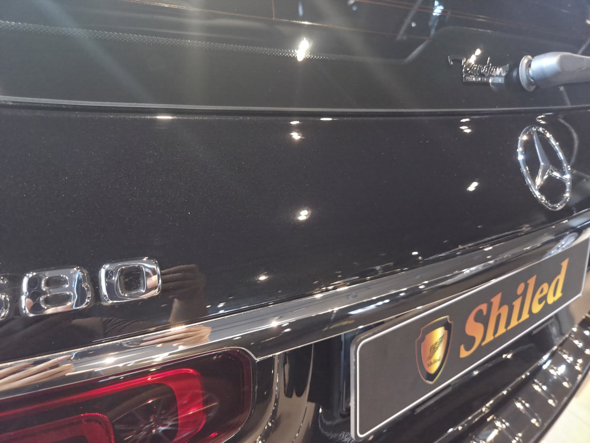
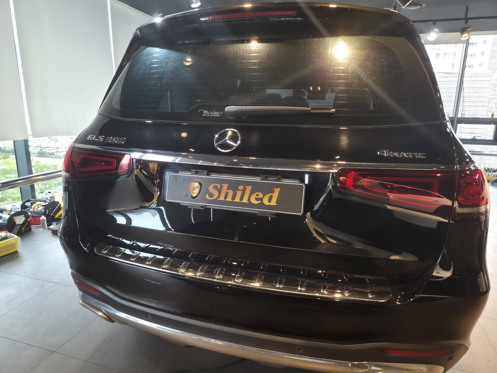

부산 쉴드광택에 들어온 벤츠 GLS580입니다. 검정 바디입니다.
이 차는 도장면에 자글자글하게 박힌 워터스팟(물자국)을 제거광택으로 걷어낸 뒤, 발수·방오가 강한 유리막코팅으로 마감했습니다.

워터스팟은 그냥 세차로 안 지워집니다
입고됐을 때 검정 도장 위에 하얀 점들이 자글자글하게 깔려 있었습니다.
워터스팟은 물이 마르면서 남은 미네랄(석회 성분)이 도장면에 눌어붙은 자국입니다. 표면에 얕게 박혀 있어 세제로는 떨어지지 않습니다. 여기에 세차하며 쌓인 스월(거미줄 잔기스)까지 겹쳐 있었습니다.

작업 전. 보닛 위로 하얀 물자국이 자글자글하게 깔려 있습니다
광택은 무조건 세게 깎는 게 정답이 아닙니다
물자국을 없앤다고 클리어코트(도장면 맨 위 보호막)를 마구 깎으면, 정작 도장 수명을 깎는 일이 됩니다.
그래서 물자국과 잔기스 깊이를 보고 필요한 만큼만 컴파운드와 패드를 맞춰 걷어냅니다. 16년간 직접 시공하며 잡아온 감각입니다.
기술자의 팁
워터스팟은 오래 둘수록 깊게 박혀 제거가 어려워집니다. 비를 맞은 뒤 물기를 오래 방치하는 습관이 검정차 물자국의 가장 큰 원인입니다.
코팅 전, 전처리가 9할입니다
좋은 코팅도 더러운 바탕 위에 올리면 의미가 없습니다.
디테일링 세차로 표면 오염을 걷어내고, 철분 제거제로 박힌 쇳가루를 녹여냅니다. 마스킹으로 고무·플라스틱을 보호하고, 탈지까지 끝내야 비로소 코팅을 올릴 면이 됩니다. 눈에 안 보이는 오염까지 잡는 게 퀄리티의 시작입니다.
검정 대형 SUV는 왜 발수·방오인가
검정은 물자국과 잔기스가 가장 잘 보이는 색입니다.
GLS처럼 차체가 크면 세차 면적도 넓습니다. 그래서 빗물과 오염을 밀어내 물자국 재발을 늦추고 세차를 수월하게 해주는 발수·방오 쪽 성능이 중요합니다. 그 방향으로 유리막코팅을 올렸습니다.
코팅제는 대표가 화학공학 전공으로 직접 개발·제조한 제품입니다.
작업 전후, 어떻게 달라졌나
말로 "물자국을 걷어냈습니다"라고 하는 것보다, 전후를 비교하는 게 정확합니다.


물자국이 자글자글했던 검정 도장이, 작업 후 조명이 또렷하게 비칩니다


도어 — 스월과 물자국이 깔려 있던 면이 정리됐습니다
마감 후
검정 바디 위로 조명과 주변 사물이 왜곡 없이 맺힙니다.
이렇게 반사가 또렷하게 떨어진다는 건, 제거광택으로 표면을 평탄하게 잡고 그 위에 코팅막이 고르게 올라갔다는 뜻입니다.



시공 후, 이렇게 관리하세요
코팅은 시공으로 끝이 아닙니다. 관리로 수명이 갈립니다.
완전 경화 전(약 하루)에는 비·눈·세차를 피해 주십시오. 비를 맞은 뒤에는 물기를 오래 두지 말고 닦아주시면 물자국 재발을 늦출 수 있습니다. 3주에 한 번 관리 세차 때 전용 관리제 '마스터샤이니'를 뿌려주시면 코팅력이 오래 유지됩니다.
자주 묻는 질문
Q. 워터스팟(물자국)은 그냥 세차로 안 지워지나요?
A. 일반 세차로는 잘 안 지워집니다. 물이 마르며 남은 미네랄이 도장면에 눌어붙은 자국이라, 제거광택으로 그 층을 걷어내야 정리됩니다.
Q. 검정 대형 SUV는 어떤 코팅이 맞나요?
A. 발수·방오가 강한 유리막코팅이 잘 맞습니다. 빗물과 오염을 밀어내 물자국 재발을 늦추고 넓은 차체의 세차를 수월하게 해줍니다.
Q. 광택을 하면 도장이 얇아지지 않나요?
A. 필요한 만큼만 깎습니다. 클리어코트 두께를 보고 물자국·잔기스 깊이에 맞춰 컴파운드와 패드를 조절합니다. 무조건 세게 깎는 게 정답은 아닙니다.
Q. 코팅 후 관리는 어떻게 하나요?
A. 완전 경화 전 약 하루는 비·눈·세차를 피하시고, 비를 맞으면 물기를 오래 두지 마십시오. 3주에 한 번 마스터샤이니로 관리하시면 코팅력이 오래 유지됩니다.
Q. 쉴드광택 위치와 예약은 어떻게 하나요?
A. 부산 남구 유엔로220 1F 쉴드광택입니다. 예약·상담은 010-3384-1850, 대표 최한중이 직접 상담하고 책임 시공합니다.
신차든 출고한 지 된 차든, 시작점이 다르면 결과도 다릅니다.
제품을 직접 만드는 사람이 직접 시공합니다.
부산에서 광택·유리막코팅을 고민 중이시면 편하게 연락 주십시오.
어떤 차를 타냐보다 어떻게 타냐가 중요합니다~!
📞 010-3384-1850 견적 문의쉴드광택 · 부산 남구 유엔로220 1F · 대표 최한중